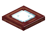

红木玻璃活板门
Mangrove Glass Trapdoor
英文名: Mangrove Glass Trapdoor命名空间 ID:
glassential:mangrove_glass_trapdoor类型: 方块所属模组: Glassential-renewed资料检索: 🔎 在 MC百科 搜索「红木玻璃活板门」合成获得 (1)

原始 JSON
{
"type": "minecraft:crafting_shapeless",
"category": "redstone",
"ingredients": [
{
"item": "minecraft:mangrove_trapdoor"
},
{
"item": "minecraft:glass_pane"
}
],
"result": {
"id": "glassential:mangrove_glass_trapdoor"
}
}用于合成 (1)
原始 JSON
{
"type": "minecraft:crafting_shapeless",
"category": "redstone",
"ingredients": [
{
"item": "glassential:mangrove_glass_trapdoor"
}
],
"result": {
"id": "minecraft:mangrove_trapdoor"
}
}